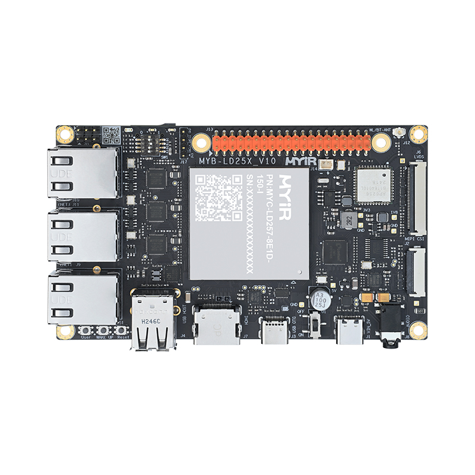
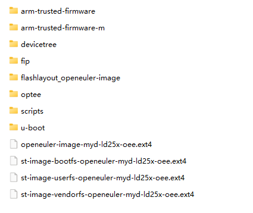

米尔科技MYD-LD25X开发板
板卡介绍
STM32MP257D是ST推出的搭载了双核 Cortex-A35 @1.5 GHz和Cortex-M33@400MHz的微处理器，它集成1.35 TOPS的NPU加速器和3D GPU, 支持H.264/VP8 1920*1080@60FPS视频编解码， 支持丰富的多媒体资源，例如24-bit RGB/MIPI-DSI/Dual-link LVDS/Lite-ISPMIPICSI/DCMI。处理器还支持3路千兆以太网/3路CAN FD/1路1lane PCIE2.0/1路USB3.0&2.0OTG/1路USB2.0 HOST /3路SDIO3.0/9路UART接口/1路16bit FMC等；适用于高端工业HMI、边缘计算网关、新能源充电桩、储能EMS系统、工业自动化PLC、运动控制器等场景。
米尔电子基于STM32MP257D处理器推出了开发套件MYD-LD25X，套件由核心板MYC-LD25X和底板MYB-LD25X组成，核心板与底板采用LGA贴片焊接方式。更多信息请参考米尔科技官网： MYD-LD25X介绍

MYD-LD25X开发板
构建介绍
构建机器和oebuild工具准备： 参照正常流程准备好构建环境
构建镜像
（1）初始化myd-ld25x配置：
cd <path-to-your-workspace> oebuild generate -p myd-ld25x-oee -d myd-ld25x-oee 当前默认配置包含了嵌入式AI、TSN和嵌入式图形的基本配置，具体可以参考 :file: `.oebuild/myd-ld25x-oee.yaml`
（2）构建myd-ld25x镜像
cd <path-to-your-workspace>/myd-ld25x-oee oebuild bitbake # oebuild bitbake执行后将进入构建交互环境 bitbake openeuler-imageNote
myd-ld25x-oee所需要的软件包中有一部分暂时未在openEuler中托管，构建过程中需要访问github等外部源
烧录镜像
最终构建好的相关产物位于构建目录中的
temp/deploy/images/myd-ld25x-oee/目录下，包含了myd-ld25x-oee诸多镜像文件，需要从中提取 烧录相关的目录和镜像，可以参考如下结构，并通过STM32CubeProgrammer工具在Windows环境下通过USB直接烧录到开发板的emmc存储中。
烧录相关文件结构
网络配置
以太网硬件拓扑
STM32MP257 内置两个 GMAC 控制器（ETH1、ETH2）和一个千兆以太网交换机 DEIP（TTTech 确定性以太网 IP，支持 802.1 TSN 与低延迟 ACM 直通转发）。 其中 ETH1 既可以作为独立网口，也可以切换为交换机模式；切换后交换机 通过两个外部端口分别接管底板上的 RJ45 网口，形成三网口拓扑：
+--------------------------------------------+
| STM32MP257 SoC |
| |
| GMAC2 (eth2@482d0000) -- PHY@5 --> RJ45-2 | <- 独立网口
| |
| GMAC1 (eth1@482c0000) === fixed-link ===+ |
| 【二选一：独立模式 或 交换机模式】 | |
| v |
| DEIP Switch (ttt-sw@4c000000) |
| sw0p1 -- 内部端口(GMAC 上行) |
| sw0p2 -- 外部端口 -- PHY@4 --> RJ45-1 |
| sw0p3 -- 外部端口 -- PHY@6 --> RJ45-3 |
| sw0ep -- 终端端口(配置IP的入口) |
| + ACM 模块(超低延迟 cut-through) |
+--------------------------------------------+
两种工作模式由启动时加载的设备树决定，镜像同时提供两套 DTB：
设备树 |
行为 |
|---|---|
|
GMAC1、GMAC2 各接一个 RJ45 独立网口（eth0/eth1）， DEIP 交换机关闭，第三个 RJ45 无接口 |
|
GMAC1 降级为交换机内部上行口，RJ45-1 与 RJ45-3 变为交换端口，RJ45-2 保持独立网口，三口可同时接入 |
默认网络配置（独立模式）
镜像默认加载 myb-stm32mp257x-2GB.dtb，提供开箱即用的以太网配置：
接口命名：机器配置中已固化
net.ifnames=0内核启动参数 （见meta-st-stm32mp/conf/machine/myd-ld25x.conf的UBOOT_EXTLINUX_KERNEL_ARGS），以太网接口保持内核名eth0/eth1。 若未设置该参数，systemd-udev 的 Devicetree-alias 命名策略会将接口 重命名为end1/end2，导致下述静态网络配置无法匹配。静态地址：由 openEuler 层
os-base软件包安装的/etc/systemd/network/10-eth-static.network提供默认配置：[Match] Name=eth* [Network] Address=192.168.7.2/24 Gateway=192.168.7.1 DHCP=ipv4 LinkLocalAddressing=ipv6
即：优先 DHCP，DHCP 不可用时落到静态地址 192.168.7.2/24。 与 PC 网口直连时，将 PC 配置为同网段地址（如 192.168.7.3/24）即可
ssh root@192.168.7.2登录（默认密码openEuler@2021）。Note
openEuler Embedded 的 sshd 仅启用 publickey 与 keyboard-interactive 认证，使用 sshpass 时需追加
-o PubkeyAuthentication=no -o PreferredAuthentications=keyboard-interactive。 此外 Windows 防火墙（公用网络配置文件）默认拦截 ICMP，板卡 ping PC 不通但 SSH/ARP 正常属于预期行为，以 TCP 连通性为准。多网口行为：
10-eth-static.network按接口名匹配所有eth*， 网线在 eth0/eth1 之间切换时配置自动跟随带链路的接口，即插即用。
TSN/交换机模式
加载 myb-stm32mp257x-2GB-ethswitch.dtb 后进入交换机模式，
DEIP 交换机创建如下网络接口：
接口 |
角色 |
IP 配置 |
|---|---|---|
|
内部端口（GMAC1 上行，fixed-link） |
无需配置 |
|
外部交换端口，对应 RJ45-1（丝印 ETH1） |
无需配置（桥内 slave） |
|
外部交换端口，对应 RJ45-3（丝印 ETH3） |
无需配置（桥内 slave） |
|
终端端口，MPU 与交换机的应用层出入口 |
配置 IP（默认 192.168.0.10） |
|
GMAC2 独立网口，对应 RJ45-2（丝印 ETH2） |
独立配置，与交换机解耦 |
RJ45-1 与 RJ45-3 之间的报文由 DEIP 硬件 L2 转发，不经过 Linux 协议栈； MPU 自身收发通过
sw0ep终端端口。TSN（802.1Q/Qbv/Qbu）调度发生在 DEIP 出方向，sw0p2 与 sw0p3 均可作为 TSN 流端口；ACM 模块提供超低延迟直通转发。
交换机模式需要 DEIP 内核模块栈（
stm32_deip、edge-lkm、ACM， 由 meta-st-stm32mp-tsn-swch 层提供）及初始化脚本 （switch_init.sh/ttt-ip-init.sh）配合，并需要 OP-TEE 侧 提供 125 MHz 以太网交换机时钟。
Note
交换机模式下接口名不再匹配 10-eth-static.network``（``Name=eth*），
需要为 sw0ep``（或桥接后的 ``br0）单独规划 networkd 配置。
Hint
U-Boot 实际加载的设备树以串口启动日志中 Loading Device Tree
行为准。bootfs 中存在多份 per-DTB 命名的 extlinux 配置，
修改启动参数时务必确认 U-Boot 实际加载的文件，避免改错文件。